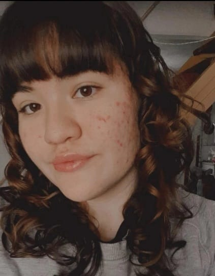

Datos personales
Nombre: Valentina Lucero. DNI: 11111110. Edad: 18 años. Localidad: Neuquén
Formación y Estudios
- Masterclass en Robotica: Introducción a la computación física.
- Idioma: Portugués nivel Intermedio.
- Actualmente finalizando estudios en EPET 20 como Técnico Programador
Experiencia Laboral
- Creación de páginas web.
- Programación de algoritmos con los lenguajes C++ y PHP.
- Instalación de Sistemas Operativos.
- Armado de computadoras.

Proyectos destacados
Aún me encuentro especializandome en esta área. Pero, considero como proyectos importantes la creación de esta página web, y mi realización del algoritmos básicos en PHP.
Habilidades
- Diseño
- Me apasiona todo lo referido al diseño. He trabajado en proyectos que lo han implicado, desde páginas web hasta creaciones de distintios logos e imagenes utilizando la aplicación Canva. Gracias a esto, adquirí conocimiento completo, experiencia en el mismo, y me gustaría seguir mejorando.
- Atención al cliente
- Una de mis fortalezas es el trato hacia las personas, me gusta brindar un buen servicio ayudando, explicando, atendiendo y colaborando. Ya que considero importante una adecuada atención como un factor favorable para la imagen de una empresa.